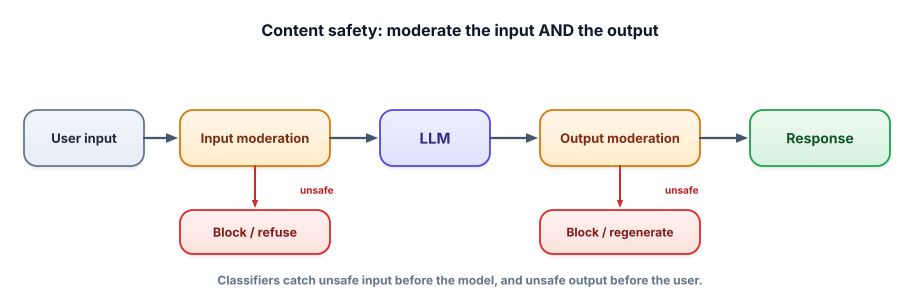

Content safety
Even a well-behaved model can be pushed into producing harmful content, and a public app that does so under your brand is a serious problem. Content moderation is the independent safety net: classifiers that check what comes in and what goes out, separate from the model itself.
Why moderate both sides
The model’s own refusal behavior is a good first line, but it’s probabilistic and beatable (jailbreaks, Lesson 7.3). Content moderation adds an independent check: classify the user’s input (block abusive or disallowed requests before they reach the model) and classify the model’s output (catch unsafe content the model generated anyway before the user sees it). Two gates, on opposite sides of the model, so a failure of one is caught by the other.

Content moderation uses a classifier to score text for unsafe categories (hate, harassment, self-harm, sexual content, violence, illegal activity, etc.). Input moderation screens user messages before the model; output moderation screens the model’s responses before the user. These are usually separate, purpose-built models (e.g., the free, open-source Llama Guard, or hosted moderation endpoints) — independent of your main model, so they catch its mistakes.
Wrap the model with two checks. Use a free safety classifier; here shown schematically.
def is_unsafe(text):
# a dedicated safety classifier (e.g., Llama Guard via Ollama — free & local)
verdict = safety_model.classify(text) # -> "safe" or a category like "violence"
return verdict != "safe"
def safe_chat(user_msg):
if is_unsafe(user_msg): # INPUT gate
return "I can't help with that request."
answer = llm(user_msg)
if is_unsafe(answer): # OUTPUT gate (catches what slipped through)
return "I'm not able to provide that." # block or regenerate
return answerThe output gate is the crucial backstop: even if a jailbreak coaxes the model into unsafe text, an independent classifier inspects the result and blocks it before it reaches the user. Belt and suspenders.
Moderation is a precision/recall trade-off. Too strict and you block legitimate users (a medical app discussing symptoms, a security tool discussing exploits defensively); too loose and harmful content slips through. Calibrate categories and thresholds to your domain and audience, and measure false positives/negatives like any other metric (Track 6).
- Moderate input and output with independent classifiers — two gates around the model.
- The output gate is the backstop for content the model produced despite its training.
- Use purpose-built safety models (free Llama Guard, hosted moderation) — separate from your main model.
- Moderation is a precision/recall trade-off; calibrate thresholds to your domain and measure them.
- Normalize/decode text before moderating to defeat obfuscation (Lesson 7.3).
You rely solely on the main model’s built-in refusals for safety. Why add a separate output moderation classifier?
1. Why moderate the input at all if you already moderate the output?
2. A medical-info app keeps getting legitimate questions blocked by an over-strict filter. How do you approach it?
3. Why use a separate model for moderation rather than asking your main model “is this safe?”
▸ Show solutions & reasoning
1. Input moderation blocks abusive/disallowed requests before you spend a model call on them, reduces the chance of generating something unsafe at all, and lets you respond appropriately to clearly bad requests. Output moderation is the backstop, but stopping the bad input early is cheaper and reduces risk. Two gates cover different failure modes.
2. Treat it as a precision/recall problem: measure the false-positive rate on real legitimate queries, then loosen or re-scope the categories/thresholds for this domain (medical discussion of symptoms isn’t “harmful”), possibly using a domain-appropriate moderation policy. The goal is to block genuine harm without blocking the app’s legitimate purpose — and you tune it with data, not guesses, like any metric (Track 6).
3. Independence. If the same model both generates and judges, a jailbreak that fools the generator can fool the judge identically (shared blind spots), and a hijacked model could rate its own unsafe output as safe. A separate, purpose-built safety classifier fails differently from your main model, so it can catch the main model’s mistakes — which is the whole point of a backstop.
Content safety isn’t a single switch; it’s a tunable subsystem you evaluate like everything else. Build a safety eval set (Track 6) of both unsafe inputs that should be blocked and legitimate-but-edgy inputs that should not be — then measure your moderation’s false-positive and false-negative rates and tune thresholds against real numbers. Categories matter: most moderation APIs/classifiers return per-category scores (hate, self-harm, sexual, violence, etc.), and the right policy differs by app — a kids’ product is strict everywhere, a security research tool must allow defensive discussion of exploits, a mental-health app must handle self-harm topics with care rather than blunt refusal.
Layer it with the rest of the track. Moderation sits alongside the model’s own refusals, your system prompt, and per-turn re-checking for jailbreaks — no single one is trusted. And remember moderation is only the content layer: it stops harmful text, but it doesn’t stop prompt injection (the text may be perfectly “safe” while still hijacking your app) or unsafe actions. So content safety is necessary but not sufficient; it’s one independent guard among several, and its job is specifically to keep harmful content from entering or leaving. Wire it on both sides, measure it, tune it to your domain, and treat its thresholds as living configuration.
Moderation checks whether output is harmful. But even harmless-looking output is dangerous if you feed it into code, queries, or actions unchecked. Next: output validation.